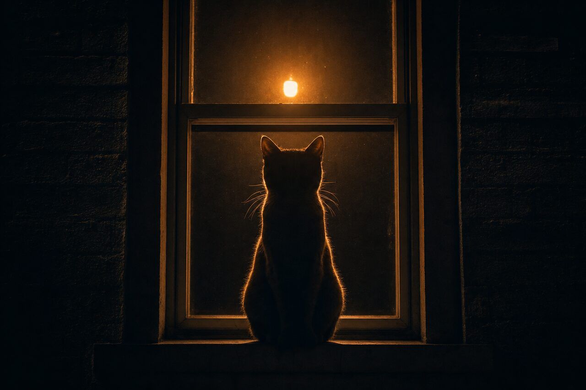
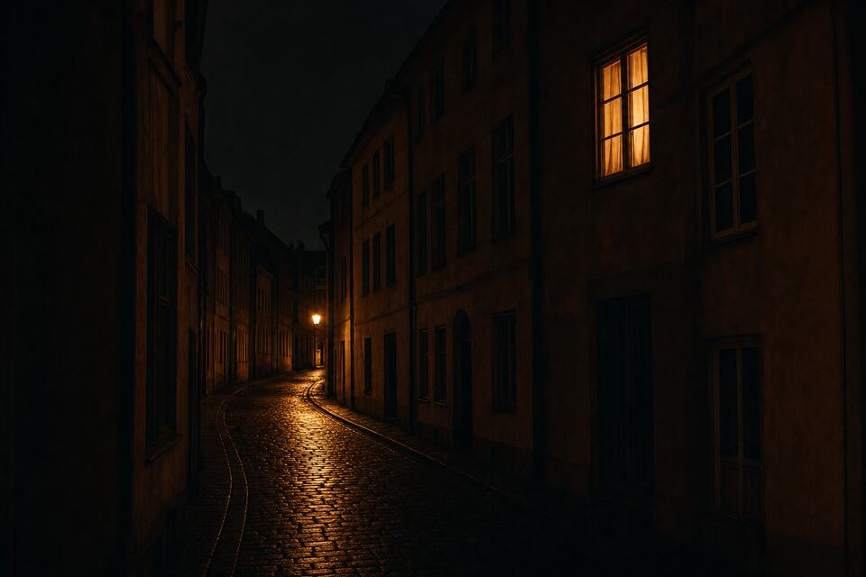
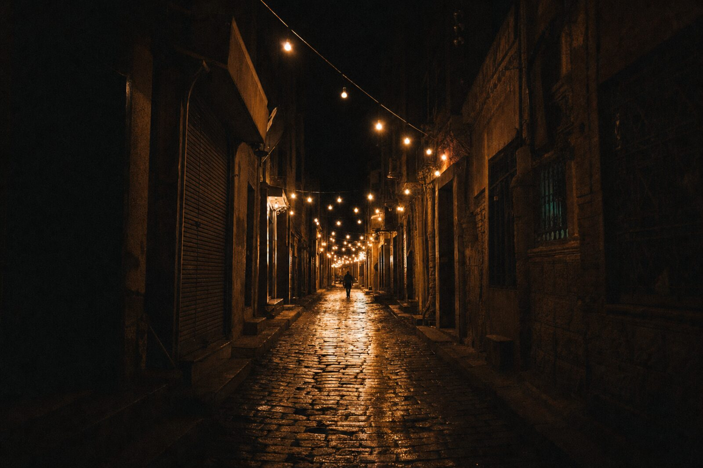
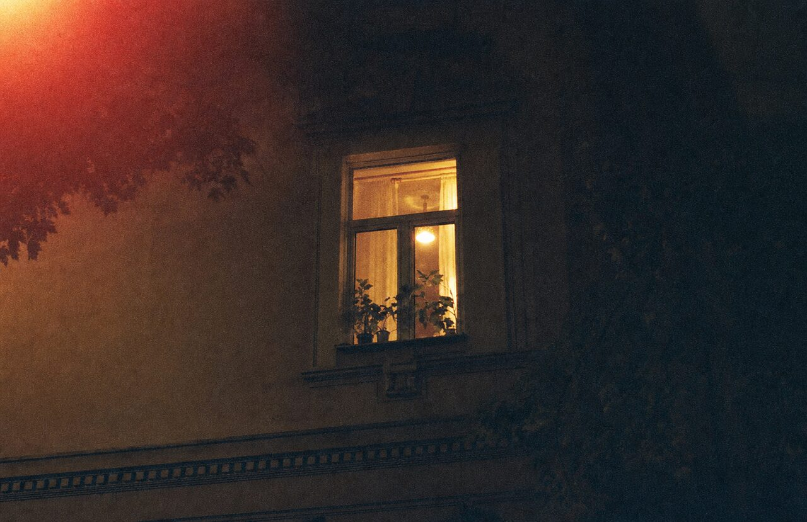
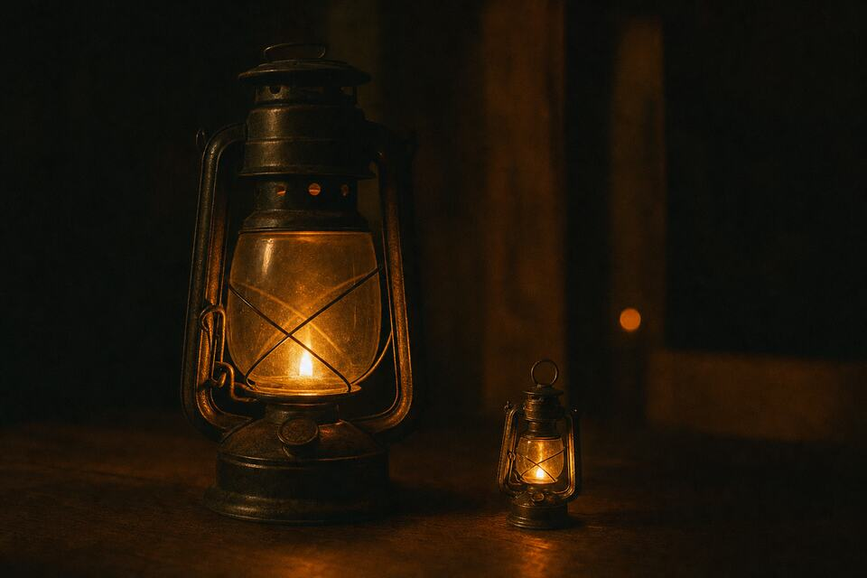
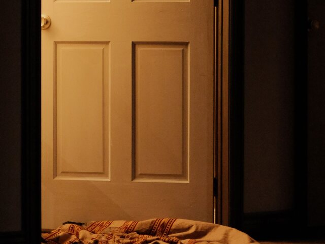

Finally someone is building the last step.
early believer · Cairo
someone was there.
مش لوحدك
مد إيدك
لسه الدنيا بخير

01 — The Promise
For thousands of years,
a light in the distance meant one thing.
Someone was there.
02 — The Roads Changed
The internet solved communication.
It never solved response.

03 — The Gap
No one came.
Delivered is not the same as answered.
Seen is not the same as safe.
A signal that reaches no one is just light leaving.
04 — The Category
SERAYAE is building it.
Human Response Infrastructure

Every night, somewhere,
someone is walking home
hoping the light is still on.
field · 03:41 · distance closing
05 — The Network
Not a feed. Not a map.

06 — The Product
The app is in closed development. Nothing here is a screenshot.

The Story
I thought the problem was alerts.
every app promised the same thing.
send an alert.
share your location.
notify your contacts.
and technically, they worked.
the notification arrived.
the message was delivered.
the location was shared.
everything worked.
except the part that mattered.
nobody knew if someone was actually coming.
and once you notice that,
you start seeing it everywhere.
we built infrastructure for communication.
we built infrastructure for transportation.
we built infrastructure for payments.
but we never built infrastructure for response.
so we started building it.
SERAYAE is our attempt to answer a simple question:
when someone needs help,
can another human reliably show up?
we think that question matters more than any feature we could list here.
it’s early.
but we're working on it.
Signals from the waitlist
Finally someone is building the last step.
early believer · Cairo
I have three people I would drop everything for. I want them on this.
guardian · beta
Delivered was never the point. Someone arriving is.
paramedic · Alexandria
My mother lives alone. That is the whole reason I signed up.
waitlist · Amman
Infrastructure is the right word. Everything else was an app.
early believer · Berlin
I want to be one of the people who comes.
first responder · waitlist
Pre-launch voices from the waitlist. No customers yet — only people who want this to exist.
07 — Built For Each Other
No one should face a crisis alone.

You’re in. Early believer #—
When the light answers, you’ll be the first to know.
We store your email to send launch updates. Nothing else. Privacy Policy